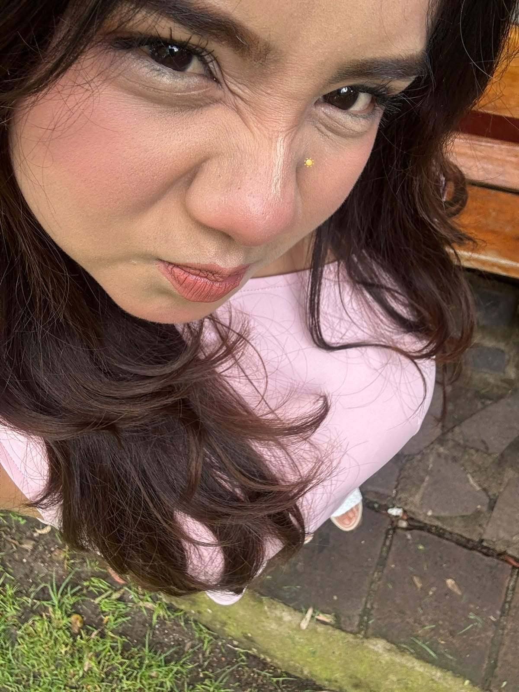
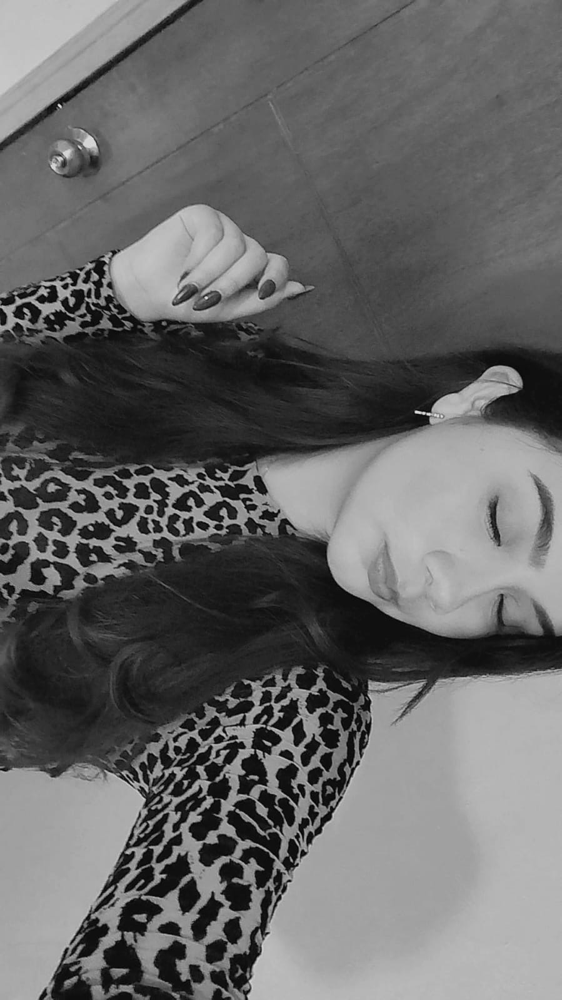
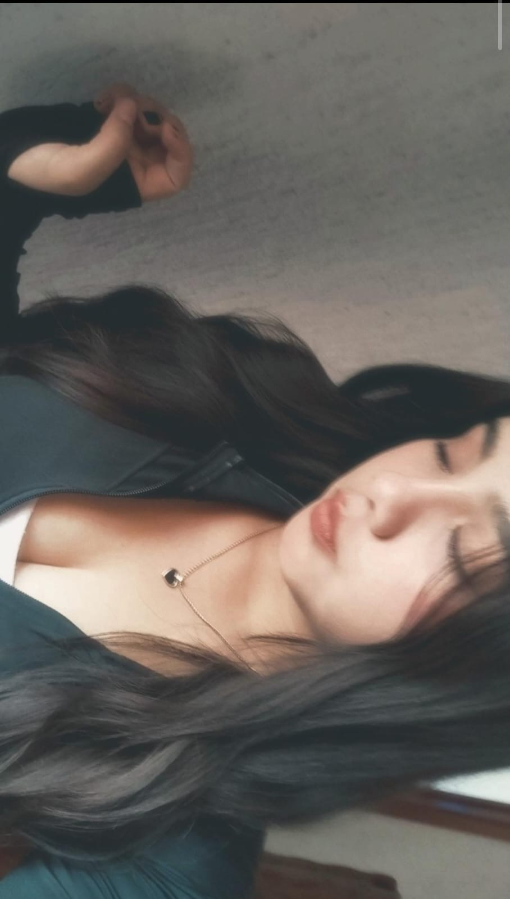

Desde que llegaste,
algo cambió en mí.
Hay personas que llegan de manera inesperada y, sin saberlo, hacen que los días tengan algo más bonito. Esta pequeña historia es para ti. ♡
Tómate tu tiempo. Cada parte tiene algo que quiero contarte.
El día que te conocí
Hay momentos que parecen pequeños, pero terminan significando muchísimo.
Dale play a este recuerdo ♡
A veces las cosas más bonitas suceden cuando menos las esperamos. Y yo agradezco muchísimo aquel día en que te vi por primera vez.
Quién diría que todo comenzaría por una entrega… Suena un poquito raro, lo sé, pero entre tantas cosas de aquel día, tú fuiste quien llamó mi atención.
No imaginaba que ese encuentro tan inesperado me permitiría conocer a una personita tan maravillosa como tú. Hoy me alegra muchísimo que nuestros caminos se hayan cruzado.
Y hay algo que quizá no sabes: leer tus mensajes cada día se ha convertido en uno de esos pequeños momentos que siempre me sacan una sonrisa. ♡
No es solo lo bonita que eres
Aunque podría quedarme admirando tu sonrisa, hay algo que me gusta todavía más.



Me encanta tu forma de ser, tu esencia y esos pequeños detalles que te hacen tan única. Me encanta descubrir cómo piensas, escucharte y conocer poco a poco todo lo bonito que hay en ti.
Y sí, también amo tus ojitos, tus cachetitos y esa carita tan linda que me dan ganas de mirar una y otra vez. Pero, por encima de todo, admiro a la persona que eres: auténtica, especial y maravillosa a tu manera.
Cada día encuentro una razón nueva para apreciarte todavía más.
Algo que me cuesta decirte
Quiero que sepas algo: desde que te conocí, despertaste en mí una ilusión que hacía mucho tiempo no sentía. No fue algo que buscara ni que tuviera planeado; simplemente ocurrió al ir descubriendo a la persona tan bonita que eres.
Tu manera de ser, tus detalles y esa esencia tan tuya hicieron que poco a poco te volvieras alguien muy especial para mí.
Quizá ya te lo he dicho, pero a veces me cuesta demostrar todo lo que siento. No siempre encuentro las palabras correctas y a veces me guardo cosas que quisiera decirte cuando te tengo enfrente.
Por eso hice esta pequeña página: porque mereces saber lo mucho que te aprecio y lo especial que eres para mí, incluso cuando no sé expresarlo tan bien en persona.
Me gustas, sí, y claro que me parecen preciosos tus ojitos, tus cachetitos y tu sonrisa. Pero lo que más me ha enamorado de conocerte es tu manera de ser.
Me encanta que seas tú misma, tu forma de hablar, tus ocurrencias y todos esos detalles que quizá para ti son pequeños, pero que a mis ojos te hacen extraordinaria.
Quiero seguir conociéndote de verdad, también en tus días difíciles, escuchar tus historias, acompañarte y compartir contigo momentos que algún día podamos recordar con una sonrisa.
No sé exactamente qué nos depare el tiempo, y tampoco quiero prometerte una historia perfecta. Lo que sí quiero es tratarte con el cariño y el respeto que mereces, ser sincero contigo y demostrarte con hechos que tengo ganas de construir algo bonito, a nuestro ritmo y sin dejar de ser nosotros mismos.
Con mucho cariño, para ti. ♡
Quiero construir algo bonito
Sé que a veces la distancia, los horarios y las responsabilidades pueden hacer que no esté tan presente como quisiera. Pero quiero que tengas claro que mi intención es dar lo mejor de mí, encontrar momentos para nosotros y demostrarte con acciones que me importas.
Quisiera compartir contigo conversaciones interminables, risas inesperadas, abrazos largos, aventuras sencillas y esos días normales que se vuelven especiales por estar con la persona indicada.
No quiero apresurar nada ni hacerte sentir presionada. Quiero que lo que nazca entre nosotros sea mutuo, bonito y a nuestro ritmo. Y si tú también lo deseas, me encantaría descubrir hasta dónde podemos llegar.
Si pudiera pedir un deseo…
Sería seguir conociéndote, seguir viéndote sonreír y tener la oportunidad de crear una historia bonita contigo.
Gracias por llegar a mi vida y hacerme sentir algo tan especial. Pase lo que pase, quería que supieras lo valiosa que eres para mí.